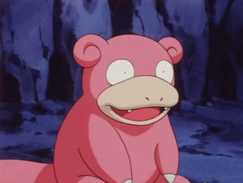

Slowpoke word ook wel de dopey pokemon genoemd, hij is niet erg slim
Hij is een van de traagste pokemons van pokemon, behalve tijdens de verschijning van de 3 slowpoke's die Avery's kleding stelen in de Isle of Armor DLC
Slowpoke evolueert door middel van een Shelder in je team, als je Slowpoke dan een level omhoog gaat evolueert hij in een slowbro
Sinds de Isle of Armor is er ook een nieuwe vorm van Slowpoke die de "Galarian Slowpoke" wordt genoemd
